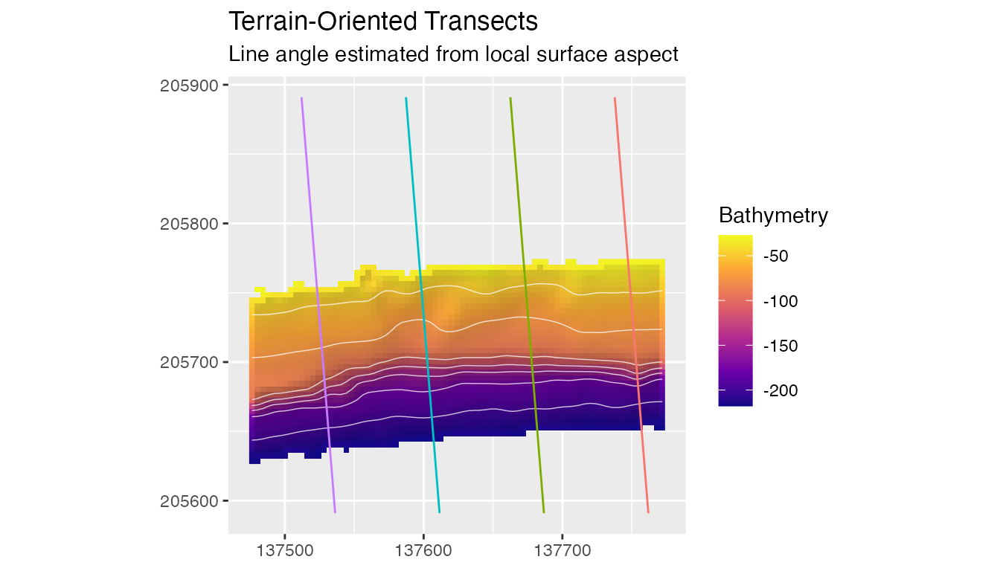
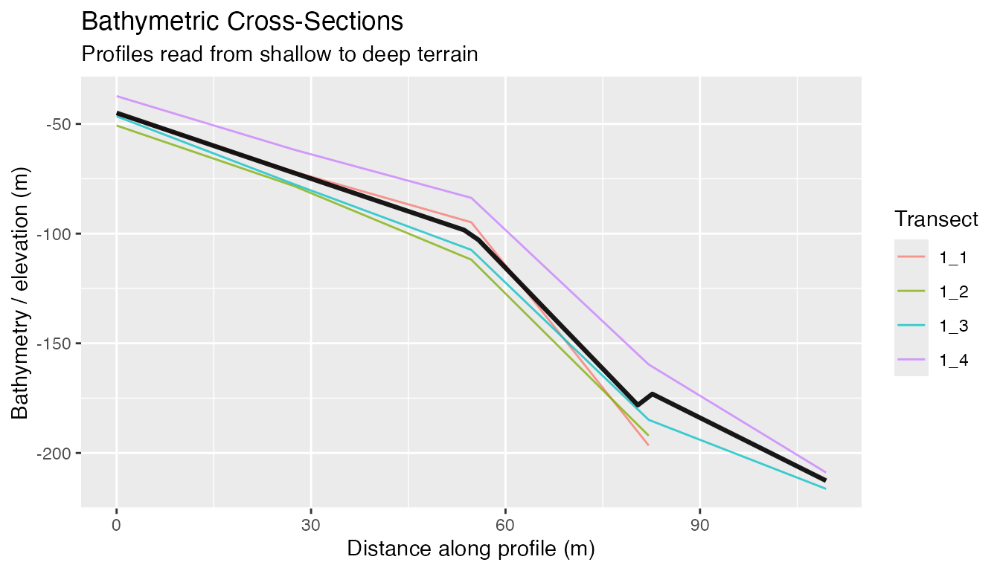
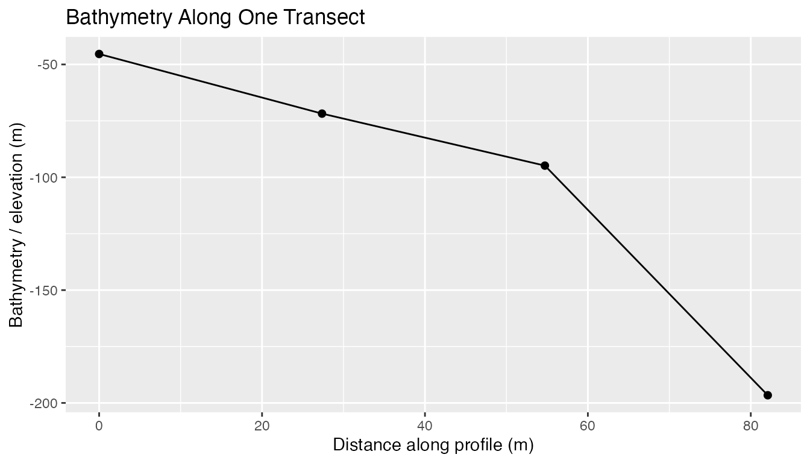
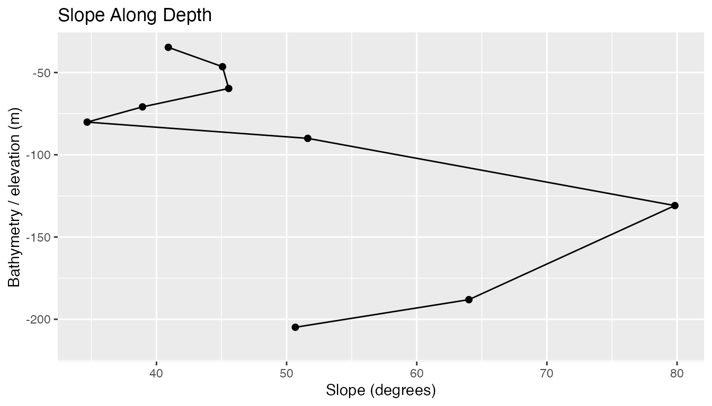

Transects and cross-sections
Source:vignettes/transects-cross-sections.Rmd
transects-cross-sections.RmdTransects turn a bathymetric raster into cross-sectional profiles. They are useful for showing terraces, escarpments, slope breaks, and cross-shelf gradients that are not always obvious from cell-by-cell terrain metrics.
Data and Surface Orientation
bathy <- read_bathy(blueterra_example("hitw"))
rectangles <- terra::vect(blueterra_example("sampling_rectangles"))
hitw_rect <- rectangles[rectangles$site_id == "hitw", ]
prepared <- prepare_bathy(
bathy,
depth_range = c(-220, -25),
smooth = TRUE
)
estimate_surface_orientation(prepared, hitw_rect)
#> [1] 94.61515estimate_surface_orientation() converts local aspect
into a representative bearing and a transect angle. Slope weighting
emphasizes cells where orientation is better defined. Its
orientation_resultant_length records aspect-vector
concentration: values near one indicate a stable common direction,
whereas values near zero indicate cancelling aspects and an unstable
mean angle.
Automatic Transect Orientation
transects <- make_transects(
hitw_rect,
spacing = 75,
bathy = prepared
)
transects[, c(
"transect_id", "angle_deg", "angle_source", "mean_aspect_deg",
"orientation_resultant_length"
)]
#> class : SpatVector
#> geometry : lines
#> dimensions : 4, 5 (geometries, attributes)
#> extent : 137512, 137762, 205591, 205891 (xmin, xmax, ymin, ymax)
#> coord. ref. : NAD83 / Puerto Rico & Virgin Is. (EPSG:32161)
#> names : transect_id angle_deg angle_source mean_aspect_deg orientation_resulta~
#> type : <chr> <num> <chr> <num> <num>
#> values : 1_1 94.6151 surface 175.385 0.981706
#> 1_2 94.6151 surface 175.385 0.981706
#> 1_3 94.6151 surface 175.385 0.981706
#> ...
plot_transects(
prepared,
transects,
color_by = "transect_id",
show_legend = FALSE,
contour_interval = 25,
title = "Terrain-Oriented Transects",
subtitle = "Line angle estimated from local surface aspect"
)
Inspect the resultant length before treating an automatic angle as a useful surface-derived direction. A weak value calls for a manual angle or the bounding-box orientation rather than a precise interpretation of the estimated mean aspect.
Manual Angle Override
Manual angles remain useful when transects need to match survey design, a predefined grid, or a known field orientation.
manual_transects <- make_transects(
hitw_rect,
spacing = 75,
angle = 45
)
manual_transects[, c("transect_id", "angle_deg", "angle_source")]
#> class : SpatVector
#> geometry : lines
#> dimensions : 6, 3 (geometries, attributes)
#> extent : 137475.2, 137775.2, 205591, 205891 (xmin, xmax, ymin, ymax)
#> coord. ref. : NAD83 / Puerto Rico & Virgin Is. (EPSG:32161)
#> names : transect_id angle_deg angle_source
#> type : <chr> <num> <chr>
#> values : 1_1 45 manual
#> 1_2 45 manual
#> 1_3 45 manual
#> ...Sampling Cross-Sections
sample_transects() extracts raster values at regular
positions along each line. extract_cross_sections() is an
alias for the same operation when the output is being used as a profile
table.
samples <- sample_transects(transects, prepared, n = 12)
sections <- extract_cross_sections(transects, prepared, n = 12)
head(samples[, c("transect_id", "distance", "x", "y", "bathy_m")])
#> # A tibble: 6 × 5
#> transect_id distance x y bathy_m
#> <chr> <dbl> <dbl> <dbl> <dbl>
#> 1 1_1 0 137762. 205591. NaN
#> 2 1_1 27.4 137760. 205618. NaN
#> 3 1_1 54.7 137758. 205646. NaN
#> 4 1_1 82.1 137755. 205673. -197.
#> 5 1_1 109. 137753. 205700. -94.8
#> 6 1_1 137. 137751. 205727. -71.8
summarize_cross_sections(samples, value_col = "bathy_m")
#> # A tibble: 4 × 6
#> transect_id bathy_m_mean bathy_m_sd bathy_m_min bathy_m_max bathy_m_median
#> <chr> <dbl> <dbl> <dbl> <dbl> <dbl>
#> 1 1_1 -102. 66.1 -197. -45.4 -83.3
#> 2 1_2 -108. 61.2 -192. -50.7 -95.1
#> 3 1_3 -127. 71.9 -216. -46.5 -107.
#> 4 1_4 -110. 71.7 -209. -37.3 -83.7
identical(names(samples), names(sections))
#> [1] TRUE
plot_cross_sections(
samples,
value_col = "bathy_m",
show_legend = TRUE,
mean_profile = TRUE,
mean_profile_na_rm = TRUE,
normalize_distance = FALSE,
profile_direction = "top_to_bottom",
title = "Bathymetric Cross-Sections",
subtitle = "Profiles read from shallow to deep terrain"
)
The value column is explicit. This matters because transect tables
include numeric metadata such as width_m,
height_m, angle_deg, and offset.
The default profile direction places the top or shallow endpoint on the
left and the bottom or deeper endpoint on the right. For
negative-elevation bathymetry, that means profiles read from higher
numeric values toward lower numeric values. Empty profile ends are
trimmed and distance is reset to zero before plotting. The mean profile
uses mean_profile_na_rm = TRUE by default, so it continues
across the full available distance range instead of stopping where the
shortest transect ends.
Single-Transect Profile
one <- samples[samples$transect_id == samples$transect_id[1], ]
plot_depth_profile(
one,
value_col = "bathy_m",
profile_direction = "top_to_bottom",
title = "Bathymetry Along One Transect"
)
Metric Profiles
The same plotting functions work with derived metrics. When both
bathymetry and a metric are sampled together,
plot_depth_profile() can draw the metric value against
bathymetric elevation, with depth or elevation on the y-axis.
metrics <- derive_terrain(prepared, metrics = c("slope", "tri", "bpi"))
metric_samples <- sample_transects(
transects,
c(prepared, metrics[["slope_deg"]]),
n = 25
)
metric_one <- metric_samples[metric_samples$transect_id == metric_samples$transect_id[1], ]
plot_depth_profile(
metric_one,
depth_col = "bathy_m",
value_col = "slope_deg",
profile_direction = "top_to_bottom",
title = "Slope Along Depth"
)
In this layout, the x-axis is the terrain metric and the y-axis is
the bathymetric or elevation coordinate. If only one value column is
supplied, plot_depth_profile() falls back to the
distance-profile layout.